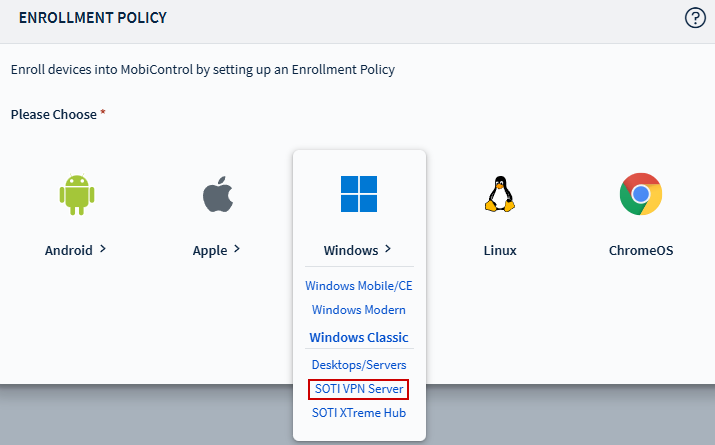
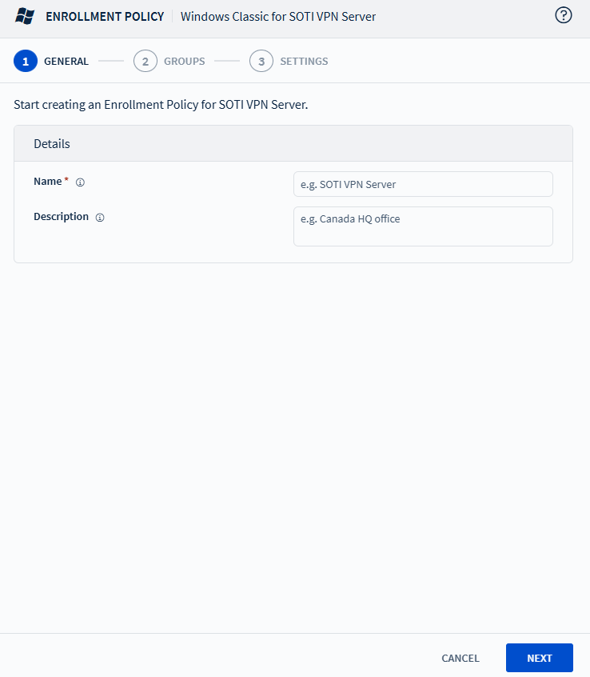
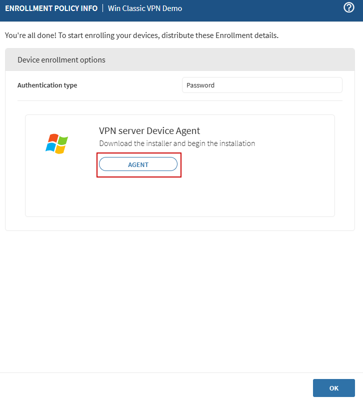

Make sure the SOTI VPN service is
configured. See SOTI VPN Service Settings for
instructions.This topic provides detailed instructions for enrolling SOTI Virtual Private Network (VPN) servers. For instructions on
enrolling other Windows device types, see Adding Windows Devices.
Creating a Windows Classic SOTI VPN Server Enrollment
Policy
From the main menu, go to Policies > Enrollment. The Enrollment Policies view appears.
Select
New Enrollment Policy to launch the Enrollment Policy wizard.
Under the Windows platform, select SOTI VPN
Server as the enrollment type.

In the General tab, enter a brief and descriptive name for the
policy, then select Next.

In the Authentication section, enter a mandatory enrollment
password. The password must be 12–64 characters long and include at least
one uppercase letter, one lowercase letter, one digit, and one symbol.
Optional: Configure the Terms and Conditions for the enrollment policy.
In the Device Group section, specify the destination device
group.
Retain the device's group assignment during
re-enrollment.
Preserve Device Name on Re-enrollment
Keep the same device name during
re-enrollment.
Activation Date
Enter the date when this policy takes effect.
Activation Time
Enter the time when this policy takes effect.
Set Deactivation Date
Define when the policy should expire.
Rule Tag
The Rule Tag is a string embedded in device agents
that belongs to the enrollment policy. It is
automatically generated by SOTI MobiControl and is editable.
Manage Certificate Authorities
Configure certificate authorities and dynamic
certificate templates. See Adding Windows Devices.
Configure device agent options:
Automatic Deployment Server Discovery
Enable the toggle to allow the device agent to
attempt to discover the Deployment Server (DS) using UDP
broadcasts.
Device Stable Storage Folder
Specify the folder on the device that will not be
cleared on a cold boot. The agent stores installers,
settings, and packages in this folder.
Device Identifier
Select how the device will be uniquely identified:
Server Generated
MAC Address
ID created by manufacturer
Deployment Server(s)
Choose the Deployment Server the agent connects to
for enrollment.
Optional: Configure device enrollment restrictions, including setting a maximum
enrollment limit and defining criteria based on IP address and OS
version.
Select Finish.
Select Agent to download the zipped installer
file for enrolling your device.

Enrolling a Windows Classic SOTI VPN Server
Make sure the VPN server meets the following requirements:
Operating System: Windows Server 2016, 2019, or 2022
Access to your enterprise network
Devices must be able to reach the VPN server on UDP port 51820
Place the downloaded zipped installer file on your VPN server.
Unzip the archive file to run the executable.
Note: Run the executable with its
enrollment PIN as a parameter. For example, if your PIN is
1234, run the following
command:
SOTIVPNServerInstaller.exe -pin 1234
The SOTI MobiControl Windows device
agent installs and enrolls the VPN server into SOTI MobiControl.Enable your SOTI VPN server for communication. See
Configuring SOTI VPN Server Settings.